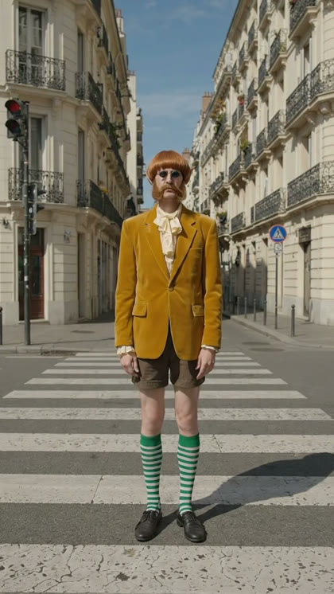
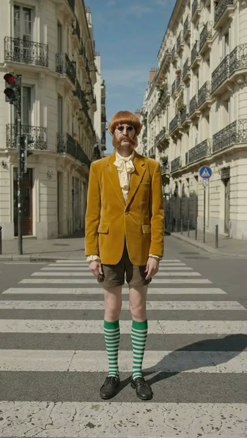

Real clips made with flowctl. Left: the frame handed in. Right: the first frame of the clip Flow generated.

Handed in · last frame of the previous clip
=

Generated · first frame of the next clip
1.1/255
mean grey-level difference between the two frames. Without the frame, text-only chaining measured 10.1/255 and changed the scene.